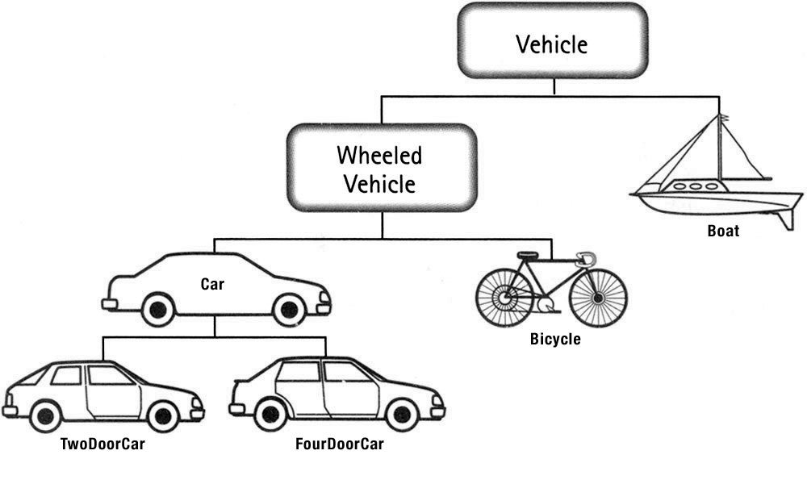
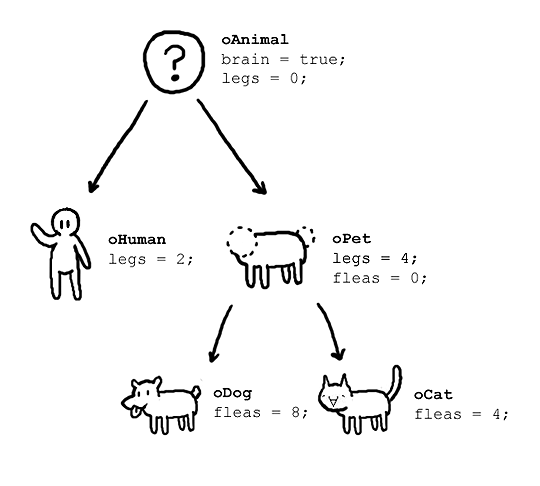
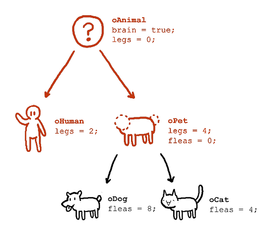
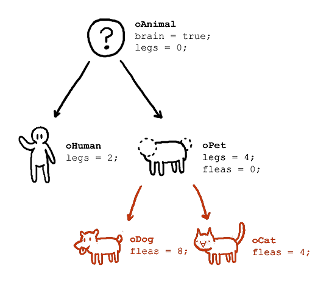

OOP: Inheritance

Abstraction
- Abstract classes loosely define a conceptual object role.
- Specific implementations build upon these abstractions.
- Common code is shared among these related objects.
Extending Objects
By replacing aspects of an object, we can take advantage of its original behavior while modifying its specific role within the application.
Inheritance

Inheritance
- The characteristics of one object provide the basis for another.
- Descendant objects may add-to or modify traits of their ancestors.
- Abstract classes become the basis for many specific implementations.

Sub-classing
class Animal
def initialize
@brain = true
@legs = 0
end
def legs
return @legs
end
end
class Human < Animal
def initialize
super
@legs = 2
end
end
class Pet < Animal
def initialize
super
@legs = 4
@fleas = 0
end
end

Further Sub-classing
class Pet < Animal
def initialize
super
@legs = 4
@fleas = 0
end
def fleas
return @fleas
end
end
class Dog < Pet
def initialize
super
@fleas = 8;
end
end
class Cat < Pet
def initialize
super
@fleas = 4;
end
end